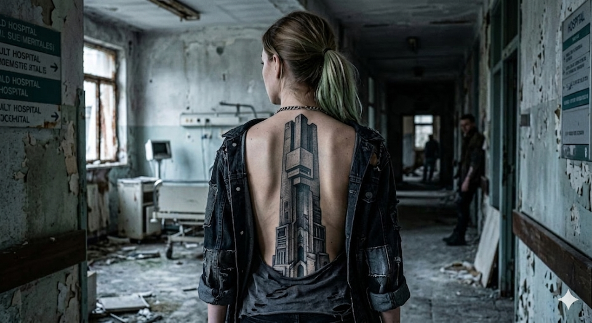

Estudio de arquitectura corporal
Arquitectura inscrita
en la piel
Concrete Void Studio opera desde 19.4326° N / 99.1332° W — 2240 m, en Ciudad de México. Desde esta latitud urbana exploramos el tatuaje como arquitectura: estructuras de tinta diseñadas para habitar la piel.
El cuerpo se convierte
en superficie arquitectónica.
La piel es el concreto
donde se inscriben estas estructuras.
Arquitecturas desarrolladas
Archivo
Registro visual de intervenciones donde la tinta
se convierte en estructura, volumen y memoria.


Arquitectos de la tinta
Quienes diseñan
las estructuras
Cada artista del estudio desarrolla un lenguaje estructural propio. Diseñan intervenciones donde la piel funciona como superficie arquitectónica.

Adrian Kovač
Biostructural Design

Elena Voss
Dermal Geometry

Mateo Ibarra
Anatomical Systems
Filosofía
La lógica detrás
de las estructuras
Arquitectura inscrita en la piel
Concrete Void Studio explora la relación entre arquitectura, memoria y decadencia. Cada tatuaje funciona como una estructura visual: una construcción hecha de líneas negras, sombras profundas y geometrías fragmentadas.
Nos inspiramos en edificaciones brutalistas, ciudades abandonadas y paisajes post-industriales. Espacios que alguna vez fueron símbolos de progreso y hoy permanecen como ruinas silenciosas. En esa transición entre presencia y vacío encontramos nuestra estética.
El cuerpo se convierte en superficie arquitectónica.
La piel es el concreto donde se inscriben estas estructuras.
Nuestros diseños no buscan ornamentación superficial. Se enfocan en formas austeras, contrastes radicales y composiciones densas, donde la sombra define el peso de cada elemento.
La simbología ocultista aparece como lenguaje paralelo: símbolos arcaicos, geometrías rituales y signos que evocan sistemas de conocimiento olvidados. Cada pieza es una exploración del vacío, la permanencia y la transformación.
Concrete Void Studio no produce simples tatuajes.
Construye arquitecturas visuales destinadas a habitar la piel.
Intervenir la superficie
Intervención
Toda pieza comienza como un proyecto.
Aquí inicia el proceso para diseñar y construir
una estructura pensada para habitar tu piel.
Directrices de la intervención
Protocolo
Información esencial sobre el proceso, preparación y cuidados posteriores. Lineamientos para que cada intervención se desarrolle correctamente.
Toda pieza inicia con una conversación inicial. En ella se define la idea general, el área del cuerpo a intervenir y las referencias conceptuales que pueden orientar el diseño.
A partir de este intercambio se desarrolla una propuesta visual que responde tanto a la anatomía como al lenguaje estético del estudio.
Antes de la intervención es importante que la piel se encuentre en buen estado y que el cuerpo esté descansado.
Se recomienda evitar alcohol, mantener una hidratación adecuada y acudir con tiempo suficiente para revisar el diseño final antes de comenzar el trabajo.
Una vez finalizada la pieza, se proporcionan indicaciones específicas para el proceso de cicatrización.
El cuidado adecuado de la piel es fundamental para preservar la calidad del trazo, la profundidad del negro y la integridad del diseño con el paso del tiempo.
Arquitectura inscrita
en la piel.
Cada intervención es una arquitectura construida
con líneas, sombra y permanencia.